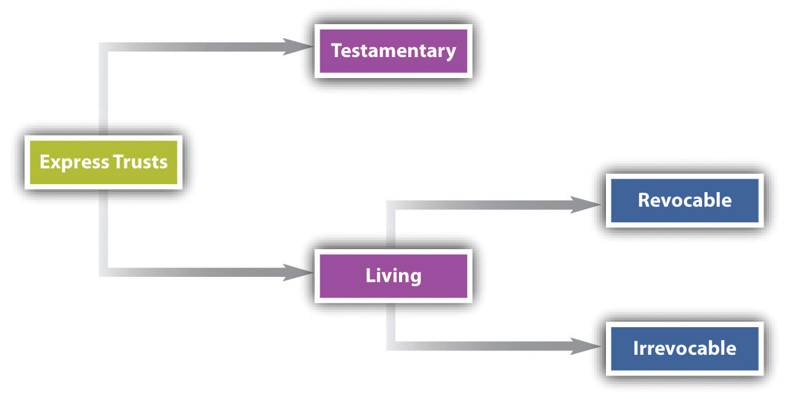

After reading this chapter, you should understand the following:
Broadly defined, estate planningThe process by which an owner over the course of his life decides how his assets are to be passed on to others at his death. is the process by which someone decides how his assets are to be passed on to others at his death. Estate planning has two general objectives: to ensure that the assets are transferred according to the owner’s wishes and to minimize state and federal taxes.
People have at their disposal four basic estate planning tools: (1) wills, (2) trusts, (3) gifts, and (4) joint ownership (see Figure 36.1 "Estate Planning"). The rules governing gifts are discussed in Chapter 31 "Introduction to Property: Personal Property and Fixtures", and joint ownership is treated in Chapter 33 "The Nature and Regulation of Real Estate and the Environment". Consequently, we focus on the first two tools here. In addition to these tools, certain assets, such as insurance (discussed in Chapter 37 "Insurance"), are useful in estate planning.
Figure 36.1 Estate Planning

Estate planning not only provides for the spouses and children, other relatives and friends, the children’s education, payoff of the mortgage, and so on, but also serves as the principal means by which liquidity can be guaranteed for taxes, expenses for administering the estate, and the like, while preserving the assets of the estate. And whenever a business is formed, estate planning consequences should always be considered, because the form and structure of the business can have important tax ramifications for the individual owners.
A willThe declaration of a person’s wishes (the testator) about the disposition of his assets on his death. is the declaration of a person’s wishes about the disposition of his assets on his death. Normally a written document, the will names the persons who are to receive specific items of real and personal property. Unlike a contract or a deed, a will is not binding as long as the person making the will lives. He may revoke it at any time. Wills have served their present function for virtually all of recorded history. The earliest known will is from 1800 BC (see Figure 36.2 "An Ancient Will"). Even if somewhat different in form, it served the same basic function as a modern will.
Figure 36.2 An Ancient Will

Source: John H. Wigmore, A Panorama of the World’s Legal Systems, vol. 1, p. 22.
Although most wills are written in a standardized form, some special types of wills are enforceable in many states.
ProbateThe process by which a deceased’s estate is managed under the supervision of a court. is the process by which a deceased’s estate is managed under the supervision of a court. In most states, the court supervising this process is a specialized one and is often called the probate court. Probate practices vary widely from state to state, although they follow a general pattern in which the assets of an estate are located, added up, and disbursed according to the terms of the will or, if there is no will, according to the law of intestate succession. To attempt to bring uniformity into the conflicting sets of state laws the National Conference of Commissioners on Uniform State Laws issued the Uniform Probate Code (UPC) in 1969, and by 2011 it had been adopted in its entirety in sixteen states. Several other states have adopted significant parts of the UPC, which was revised in 2006. Our discussion of wills and estate administration is drawn primarily from the UPC, but you should note that there are variations among the states in some of the procedures standardized in the UPC.
Any person who is over eighteen and of “sound mind” may make a will. One who is insane may not make an enforceable will, although the degree of mental capacity necessary to sustain a will is generally said to be a “modest level of competence” and is lower than the degree of capacity people must possess to manage their own affairs during their life. In other words, a court might order a guardian to manage the affairs of one who is mentally deficient but will uphold a will that the person has written. Insanity is not the only type of mental deficiency that will disqualify a will; medication of a person for serious physical pain might lead to the conclusion that the person’s mind was dulled and he did not understand what he was doing when writing his will. The case Estate of Seymour M. Rosen, (see Section 36.4.1 "Testamentary Capacity"), considers just such a situation.
Under the UPC, wills must be in writing. The will is not confined to the specific piece of paper called “will” and signed by the testator. It may incorporate by reference any other writing in existence when the will is made, as long as the will sufficiently identifies the other writing and manifests an intent to incorporate it. Although lawyers prepare neatly typed wills, the document can be written in pencil or pen and on any kind of paper or even on the back of an envelope. Typically, the written will has the following provisions: (1) a “publication clause,” listing the testator’s name and his or her intention to make a will; (2) a “revocation clause,” revoking all previously made wills; (3) burial instructions; (4) debt payments, listing specific assets to be used; (5) bequestsGift of personal property by will., which are gifts of personal property by will; (6) devisesGift of real property by will., which are gifts of real property by will; (7) a “residuary clause,” disposing of all property not covered by a specific bequest or devise; (8) a “penalty clause,” stating a penalty for anyone named in the will who contests the will; (9) the name of minor children’s guardian; and (10) the name of the executor. The executor’s job is to bring in all the assets of an estate, pay all just claims, and make distribution to beneficiaries in accord with the testator’s wishes. Beginning with California in 1983, several states have adopted statutory wills—simple fill-in-the-blank will forms that can be completed without consulting an attorney.
The testator must sign the will, and the proper place for the signature is at the end of the entire document. The testator need not sign his full name, although that is preferable; his initials or some other mark in his own hand, intended as an execution of the document, will suffice. The UPC permits someone else to sign for the testator as long as the signing is done in the testator’s presence and by his or her direction.
Most states require two or three witnesses to sign the will. The UPC requires two witnesses. The witnesses should observe the testator sign the will and then sign it themselves in the presence of each other. Since the witnesses might be asked to attest in court to the testator’s signature, it is sound practice to avoid witnesses who are unduly elderly and to use an extra witness or two. Most states forbid a person who has an interest in the will—that is, one who is a beneficiary under the will—from witnessing.
In some states, a beneficiary who serves as a witness will lose his or her right to a bequest or devise. The UPC differs from the usual rule: no will or any provision of a will is invalid because an interested party witnesses it, nor does the interested witness forfeit a bequest or devise.
Since wills are generally effective only at death, the testator may always revoke or amend a will during his lifetime. He may do so by tearing, burning, obliterating, or otherwise destroying it. A subsequent will has the effect of revoking an inconsistent prior will, and most wills expressly state that they are intended to revoke all prior wills. A written modification of or supplement to a prior will is called a codicilA written modification of or supplement to a prior will.. The codicil is often necessary, because circumstances are constantly changing. The testator may have moved to a new state where he must meet different formal requirements for executing the will; one of his beneficiaries may have died; his property may have changed. Or the law, especially the tax law, may have changed.
One exception to the rule that wills are effective only at death is the so-called living willA will that takes effect during life in cases of terminal illness, directing that physicians and others take no life-prolonging measures.. Beginning with California in 1976, most states have adopted legislation permitting people to declare that they refuse further treatment should they become terminally ill and unable to tell physicians not to prolong their lives if they can survive only by being hooked up to life-preserving machines. This living will takes effect during the patient’s life and must be honored by physicians unless the patient has revoked it. The patient may revoke at any time, even as he sees the doctor moving to disconnect the plug.
In most states, a later marriage revokes a prior will, but divorce does not. Under the UPC, however, a divorce or annulment revokes any disposition of property bequeathed or devised to the former spouse under a will executed prior to the divorce or annulment. A will is at least partially revoked if children are born after it is executed, unless it has either provided for subsequently born children or stated the testator’s intention to disinherit such children.
Specific bequests listed in a will might not be available in the estate when the testator or testatrix dies. AbatementA proportional reduction of the amount payable under a will when the funds are no longer available to pay in full. of a bequest happens when there are insufficient assets to pay the bequest. Suppose the testatrix leaves $10,000 each to “my four roommates,” but when she dies, her estate is worth only $20,000. The gift to each of the roommates is said to have abated, and each will take only $5,000.
Abatement can pose a serious problem in wills not carefully drafted. Since circumstances can always change, a general provision in a father’s will, providing “my dear daughter with all the rest, residue, and remainder of my estate,” will do her little good if business reverses mean that the $10,000 bequest to the local hospital exhausts the estate of its assets—even though at the time the will was made, the testator had assets of $1 million and supposed his daughter would be getting the bulk of it. Since specific gifts must be paid out ahead of general bequests or devises, abatement can cause the residual legatee (the person taking all assets not specifically distributed to named individuals) to suffer.
Suppose that a testator bequeathed her 1923 Rolls Royce to “my faithful secretary,” but that the car had been sold and she owned only a 1980 Volkswagen when she died. Since the Rolls was not part of the estate, it is said to have adeemed (to have been taken away). AdemptionRevocation or cancellation of a legatee’s rights under a will by the actions of the testator during his life, often by his having given away assets that the will says are to go to the legatee. of a gift in a will means that the intended legatee (the person named in the will) forfeits the object because it no longer exists. An object used as a substitute by the testator will not pass to the legatee unless it is clear that she intended the legatee to have it.
IntestacyDying without a will. means dying without a will. Intestacy happens all too frequently; even those who know the consequences for their heirs often put off making a will until it is too late—Abraham Lincoln, for one, who as an experienced lawyer knew very well the hazards to heirs of dying intestate. On his death, Lincoln’s property was divided, with one-third going to his widow, one-third to a grown son, and one-third to a twelve-year-old son. Statistics show that in New York, about one-third of the people who die with estates of $5,000 or more die without wills. In every state, statutes provide for the disposition of property of decedents dying without wills. If you die without a will, the state in effect has made one for you. Although the rules vary by statute from state to state, a common distribution pattern prevails.
At common law, parents of an intestate decedent could not inherit his property. Today, however, many states provide that parents will share in the property. If the parents have already died, then the estate will pass to collateral heirs (siblings, nieces, nephews, aunts, and uncles). If there are no collateral heirs, most state laws provide that the next surviving kin of equal degree will share the property equally (e.g., first cousins). If there are no surviving kin, the estate escheatsProperty of decedents that have no known heirs will “escheat” to the state. (es CHEETS) to the state, which is then the sole owner of the assets of the estate.
In some states, the surviving spouse without children will inherit the entire estate. In other states, the spouse must share the property with the decedent’s parents or, if they are deceased, with the collateral heirs.
In general, the surviving spouse will be entitled to one-third of the estate, and the remainder will pass in equal shares to living children of the decedent. The share of any child who died before the decedent will be divided equally among that child’s offspring. These grandchildren of the decedent are said to take per stirpesBy representation; in a distribution per stirpes, each class of individuals takes the share to which their deceased would have been entitled. (per STIR peas), meaning that they stand in the shoes of their parent. Suppose that the decedent left a wife, three children, and eight grandchildren (two children each of the three surviving children and two children of a fourth child who predeceased the decedent), and that the estate was worth $300,000. Under a typical intestate succession law, the widow would receive property worth $100,000. The balance of the property would be divided into four equal parts, one for each of the four children. The three surviving children would each receive $50,000. The two children of the fourth child would each receive $25,000. The other grandchildren would receive nothing.
A system of distribution in which all living descendants share equally, regardless of generation, is said to be a distribution per capitaAccording to the number of individuals, share and share alike; in a distribution per capita, each person named will receive an equal share.. In the preceding example, after the widow took her share, the remaining sum would be divided into eleven parts, three for the surviving children and eight for the surviving grandchildren.
If the decedent was a widow or widower with children, then the surviving children generally will take the entire estate.
To carry on the administration of an estate, a particular person must be responsible for locating the estate property and carrying out the decedent’s instructions. If named in the will, this person is called an executorThe administrator of an estate, named in the will by the testator.. When a woman serves, she is still known in many jurisdictions as an executrixThe female administrator of an estate, named in the will by the testator.. If the decedent died intestate, the court will appoint an administrator (or administratrix, if a woman), usually a close member of the family. The UPC refers to the person performing the function of executor or administrator as a personal representative. Unless excused by the will from doing so, the personal representative must post a bond, usually in an amount that exceeds the value of the decedent’s personal property.
The personal representative must immediately become familiar with the decedent’s business, preserve the assets, examine the books and records, check on insurance, and notify the appropriate banks.
When confirmed by the court (if necessary), the personal representative must offer the will in probate—that is, file the will with the court, prove its authenticity through witnesses, and defend it against any challenges. Once the court accepts the will, it will enter a formal decree admitting the will to probate.
Traditionally, a widow could make certain elections against the will; for example, she could choose dower and homestead rights. The right of dowerA right given to a widow to a life estate in one-third of the husband’s inheritable land. entitled the widow to a life estate in one-third of the husband’s inheritable land, while a homestead rightThe right to the family home (as measured by an amount of land or a specific dollar amount) to be free of all claims of creditors. is the right to the family home as measured by an amount of land (e.g., 160 acres of rural land or 1 acre of urban land in Kansas) or a specific dollar amount. In some states, this amount is quite low (e.g., $4,000 in Kansas) where the legislature has not upwardly adjusted the dollar amount for many years.
Today, most states have eliminated traditional dower rights. These states give the surviving spouse (widow or widower) the right to reject provisions made in a will and to take a share of the decedent’s estate instead.
Once the will is admitted to probate, the personal representative must assemble and inventory all assets. This task requires the personal representative to collect debts and rent due, supervise the decedent’s business, inspect the real estate, store personal and household effects, prove the death and collect proceeds of life insurance policies, take securities into custody, and ascertain whether the decedent held property in other states. Next, the assets must be appraised as of the date of death. When inventory and appraisal are completed, the personal representative must decide how and when to dispose of the assets by answering the following sorts of questions: Should a business be liquidated, sold, or allowed to continue to operate? Should securities be sold, and if so, when? Should the real estate be kept intact under the will or sold? To whom must the personal effects be given?
The personal representative must also handle claims against the estate. If the decedent had unpaid debts while alive, the estate will be responsible for paying them. In most states, the personal representative is required to advertise that the estate is in probate. When all claims have been gathered and authenticated, the personal representative must pay just claims in order of priority. In general (though by no means in every state), the order of priority is as follows: (1) funeral expenses, (2) administration expenses (cost of bond, advertising expenses, filing fees, lawsuit costs, etc.), (3) family allowance, (4) claims of the federal government, (5) hospital and other expenses associated with the decedent’s last illness, (6) claims of state and local governments, (7) wage claims, (8) lien claims, (9) all other debts. If the estate is too small to cover all these claims, every claim in the first category must be satisfied before the claims in the second category may be paid, and so on.
Before the estate can be distributed, the personal representative must take care of all taxes owed by the estate. She will have to file returns for both estate and income taxes and pay from assets of the estate the taxes due. (She may have to sell some assets to obtain sufficient cash to do so.) Estate taxesTaxes imposed by the federal government on large estates.—imposed by the federal government and based on the value of the estate—are nearly as old as the Republic; they date back to 1797. They were instituted originally to raise revenue, but in our time they serve also to break up large estates.
As of 2011, the first $1 million of an estate is exempt from taxation, lowering the threshold from an earlier standard. The Tax Policy Institute of the Brookings Institution estimates that 108,200 estates of people dying in 2011 will file estate tax returns, and 44,200 of those estates will pay taxes totaling $34.4 billion.
Although a unified tax is imposed on gifts during life and transfers at death, everyone is permitted to give away $13,000 per donee each year without paying any tax on the gift. A tax on sizable gifts is imposed to prevent people with large estates from giving away during their lives portions of their estate in order to escape estate taxes. Thus two grandparents with two married children and four grandchildren may give away $26,000 ($13,000 from each grandparent) to their eight descendants (children, spouses, grandchildren) each year, for a total of $208,000, without paying any tax.
State governments also impose taxes at death. In many states, these are known as inheritance taxesState taxes on an heir’s right to receive the property. and are taxes on the heir’s right to receive the property. The tax rate depends on the relationship to the decedent: the closer the relation, the smaller the tax. Thus a child will pay less than a nephew or niece, and either of them will pay less than an unrelated friend who is named in the will.
Once the taxes are paid, a final accountingDone by the executor to close out an estate in probate. After taxes and debts are paid, an accounting must be prepared, showing the remaining principal, income, and disbursements to beneficiaries. must be prepared, showing the remaining principal, income, and disbursements. Only at this point may the personal representative actually distribute the assets of the estate according to the will.
Any person with the requisite capacity may make a will and bequeath personal property to named heirs. A will can also devise real property. Throughout the United States, there are fairly common requirements to be met for a will to qualify for probate.
Intestacy statutes will govern where there is no will, and an administrator will be appointed by the probate court. Intestacy statutes will dictate which relatives will get what portion of the decedent’s estate, portions that are likely to differ from what the decedent would have done had he or she left a valid will. Where there are no heirs, the decedent’s property escheats to the state.
An executor (or executrix) is the person named in the will to administer the estate and render a final accounting. Estate and inheritance taxes may be owed if the estate is large enough.
When the legal title to certain property is held by one person while another has the use and benefit of it, a relationship known as a trustThe holding of legal title by one party for the benefit of another. has been created. The trust developed centuries ago to get around various nuances and complexities, including taxes, of English real property law. The trustee has legal title and the beneficiary has “equitable title,” since the courts of equity would enforce the obligations of the trustee to honor the terms by which the property was conveyed to him. A typical trust might provide for the trustee to manage an estate for the grantor’s children, paying out income to the children until they are, say, twenty-one, at which time they would become legal owners of the property.
Trusts may be created by bequest in a will, by agreement of the parties, or by a court decree. However created, the trust is governed by a set of rules that grew out of the courts of equity. Every trust involves specific property, known as the res (rees; Latin for “thing”), and three parties, though the parties may be the same person.
Anyone who has legal capacity to make a contract may create a trust. The creator is known as the settlorGrantor; the one who creates a trust. or grantor. Trusts are created for many reasons; for example, so that a minor can have the use of assets without being able to dissipate them or so that a person can have a professional manage his money.
The trustee is the person or legal entity that holds the legal title to the res. Banks do considerable business as trustees. If the settlor should neglect to name a trustee, the court may name one. The trustee is a fiduciary of the trust beneficiary and will be held to the highest standard of loyalty. Not even an appearance of impropriety toward the trust property will be permitted. Thus a trustee may not loan trust property to friends, to a corporation of which he is a principal, or to himself, even if he is scrupulous to account for every penny and pays the principal back with interest. The trustee must act prudently in administering the trust.
The beneficiary is the person, institution, or other thing for which the trust has been created. Beneficiaries are not limited to one’s children or close friends; an institution, a corporation, or some other organization, such as a charity, can be a beneficiary of a trust, as can one’s pet dogs, cats, and the like. The beneficiary may usually sell or otherwise dispose of his interest in a trust, and that interest likewise can usually be reached by creditors. Note that the settlor may create a trust of which he is the beneficiary, just as he may create a trust of which he is the trustee.
Continental Bank & Trust Co. v. Country Club Mobile Estates, Ltd., (see Section 36.4.2 "Settlor’s Limited Power over the Trust"), considers a basic element of trust law: the settlor’s power over the property once he has created the trust.
Trusts are divided into two main categories: express and implied. Express trusts include testamentary trustsA trust made during the settlor’s life that takes effect on his death. and inter vivos (or living) trustsA trust that takes effect during the life of the settlor.. The testamentary trust is one created by will. It becomes effective on the testator’s death. The inter vivos trust is one created during the lifetime of the grantor. It can be revocable or irrevocable (see Figure 36.3 "Express Trusts").
Figure 36.3 Express Trusts
A revocable trustA trust that the settlor can terminate at his option. is one that the settlor can terminate at his option. On termination, legal title to the trust assets returns to the settlor. Because the settlor can reassert control over the assets whenever he wishes, the income they generate is taxed to him.
By contrast, an irrevocable trustA trust that the settlor cannot terminate at his option. is permanent, and the settlor may not revoke or modify its terms. All income to the trust must be accumulated in the trust or be paid to the beneficiaries in accordance with the trust agreement. Because income does not go to the settlor, the irrevocable trust has important income tax advantages, even though it means permanent loss of control over the assets (beyond the instructions for its use and disposition that the settlor may lay out in the trust agreement). A hybrid form is the reversionary trust: until the end of a fixed period, the trust is irrevocable and the settlor may not modify its terms, but thereafter the trust assets revert to the settlor. The reversionary trust combines tax advantages with ultimate possession of the assets.
Of the possible types of express trusts, five are worth examining briefly: (1) Totten trusts, (2), blind trusts, (3) Clifford trusts, (4) charitable trusts, and (5) spendthrift trusts. The use of express trusts in business will also be noted.
The Totten trust, which gets its name from a New York case, In re Totten,In re Totten, 71 N.E. 748 (N.Y. 1904). is a tentative trust created when someone deposits funds in a bank as trustee for another person as beneficiary. (Usually, the account will be named in the following form: “Mary, in trust for Ed.”) During the beneficiary’s lifetime, the grantor-depositor may withdraw funds at his discretion or revoke the trust altogether. But if the grantor-depositor dies before the beneficiary and had not revoked the trust, then the beneficiary is entitled to whatever remains in the account at the time of the depositor’s death.
In a blind trust, the grantor transfers assets—usually stocks and bonds—to trustees who hold and manage them for the grantor as beneficiary. The trustees are not permitted to tell the grantor how they are managing the portfolio. The blind trust is used by high government officials who are required by the Ethics in Government Act of 1978 to put their assets in blind trusts or abstain from making decisions that affect any companies in which they have a financial stake. Once the trust is created, the grantor-beneficiary is forbidden from discussing financial matters with the trustees or even to give the trustees advice. All that the grantor-beneficiary sees is a quarterly statement indicating by how much the trust net worth has increased or decreased.
The Clifford trust, named after the settlor in a Supreme Court case, Helvering v. Clifford,Helvering v. Clifford, 309 U.S. 331 (1940). is reversionary: the grantor establishes a trust irrevocable for at least ten years and a day. By so doing, the grantor shifts the tax burden to the beneficiary. So a person in a higher bracket can save considerable money by establishing a Clifford trust to benefit, say, his or her children. The tax savings will apply as long as the income from the trust is not devoted to needs of the children that the grantor is legally required to supply. At the expiration of the express period in the trust, legal title to the res reverts to the grantor. However, the Tax Reform Act of 1986 removed the tax advantages for Clifford trusts established after March 1986. As a result, all income from such trusts is taxed to the grantor. Existing Clifford trusts were not affected by the 1986 tax law.
A charitable trust is one devoted to any public purpose. The definition is broad; it can encompass funds for research to conquer disease, to aid battered wives, to add to museum collections, or to permit a group to proselytize on behalf of a particular political or religious doctrine. The law in all states recognizes the benefits to be derived from encouraging charitable trusts, and states use the cy pres (see press; “as near as possible”) doctrine to further the intent of the grantor. The most common type of trust is the charitable remainder trust. You would donate property—usually intangible property such as stock—in trust to an approved charitable organization, usually one that has tax-exempt 501(c)(3) status from the IRS. The organization serves as trustee during your life and provides you or someone you designate with a specified level of income from the property that you donated. This could be for a number of years or for your lifetime. After your death or the period that you set, the trust ends and the charitable organization owns the assets that were in the trust.
There are important tax reasons why people set up charitable trusts. The trustor gets five years' worth of tax deductions for the value of the assets in the charitable trust. Capital gains are treated favorably, as well: charitable trusts are irrevocable, which means that the person setting up the trust (the “trustor”) permanently gives up control of the assets to the charitable organization. Thus, the charitable organization could sell an asset in the trust that would ordinarily incur significant capital gains taxes, but since the trustor no longer owns the asset, there is no capital gains tax: as a tax-exempt organization, the charity will not pay capital gains, either.
A spendthrift trust is established when the settlor believes that the beneficiary is not to be trusted with whatever rights she might possess to assign the income or assets of the trust. By express provision in a trust instrument, the settlor may ensure that the trustees are legally obligated to pay only income to the beneficiary; no assignment of the assets may be made, either voluntarily by the beneficiary or involuntarily by operation of law. Hence the spendthrift beneficiary cannot gamble away the trust assets nor can they be reached by creditors to pay her gambling (or other) debts.
In addition to their use in estate planning, express trusts are also created for business purposes. The business trust was popular late in the nineteenth century as a way of getting around state limitations on the corporate form and is still used today. By giving their shares to a voting trust, shareholders can ensure that their agreement to vote as a bloc will be carried out. But voting trusts can be dangerous. As discussed in Chapter 48 "Antitrust Law" agreements that result in price fixing or other restraints of trade violate the antitrust laws; for example, companies are in violation when they act collusively to fix prices by pooling voting stock under a trust agreement, as happened frequently at the turn of the century.
Trusts can be created by courts without any intent by a settlor to do so. For various reasons, a court will declare that particular property is to be held by its owner in trust for someone else. Such trusts are implied trusts and are usually divided into two types: constructive trustsCreated by courts to redress fraud or prevent unjust enrichment. and resulting trustsCreated by courts to give effect to the intent of the parties.. A constructive trust is one created usually to redress a fraud or to prevent unjust enrichment. Suppose you give $1 to an agent to purchase a lottery ticket for you, but the agent buys the ticket in his own name instead and wins $1,000,000, payable into an account in amounts of $50,000 per year for twenty years. Since the agent had violated his fiduciary obligation and unjustly enriched himself, the court would impose a constructive trust on the account, and the agent would find himself holding the funds as trustee for you as beneficiary. By contrast, a resulting trust is one imposed to carry out the supposed intent of the parties. You give an agent $100,000 to purchase a house for you. Title is put in your agent’s name at the closing, although it is clear that since she was paid for her services, you did not intend to give the house to her as a gift. The court would declare that the house was to be held by the agent as trustee for you during the time that it takes to have the title put in your name.
A trust can be created during the life of the settlor of the trust. A named trustee and beneficiary are required, as well as some assets that the trustee will administer. The trustee has a fiduciary duty to administer the trust with the utmost care. Inter vivos trusts can be revocable or irrevocable. Testamentary trusts are, by definition, not revocable, as they take effect on the death of the settlor.
Often, one person is to receive income from a trust or an estate and another person, the remainderman, is to receive the remaining property when the trust or estate is terminated. In thirty-six states, a uniform act, the Uniform Principal and Income Act (UPIA), defines principal and income and specifies how expenses are to be paid. If the trust agreement expressly gives the trustee power to determine what is income and what is principal, then his decision is usually unreviewable. If the agreement is silent, the trustee is bound by the provisions of the UPIA.
The general rule is that ordinary receipts are income, whereas extraordinary receipts are additions to principal. Ordinary receipts are defined as the return of money or property derived from the use of the principal, including rent, interest, and cash dividends. Extraordinary receipts include stock dividends, revenues or other proceeds from the sale or exchange of trust assets, proceeds from insurance on assets, all income accrued at the testator’s death, proceeds from the sale or redemption of bonds, and awards or judgments received in satisfaction of injuries to the trust property. Expenses or obligations incurred in producing or preserving income—including ordinary repairs and ordinary taxes—are chargeable to income. Expenses incurred in making permanent improvements to the property, in investing the assets, and in selling or purchasing trust property are chargeable to principal, as are all obligations incurred before the decedent’s death.
Estates and trusts are taxable entities under the federal income tax statute. The general rule is that all income paid out to the beneficiaries is taxable to the beneficiaries and may be deducted from the trust’s or estate’s gross income in arriving at its net taxable income. The trust or estate is then taxed on the balance left over—that is, on any amounts accumulated. This is known as the conduit rule, because the trust or estate is seen as a conduit for the income.
A power of appointment is the authority given by one person (the donor) to another (the donee) to dispose of the donor’s property according to whatever instructions the donor provides. A power of appointment can be created in a will, in a trust, or in some other writing. The writing may imply the power of appointment rather than specifically calling it a power of appointment. For example, a devise or bequest of property to a person that allows that person to receive it or transfer it gives that person a power of appointment. The person giving the power is the donor, and the person receiving it is the donee.
There are three classes of powers of appointment. General powers of appointment give donees the power to dispose of the property in any way they see fit. Limited powers of appointment, also known as special powers of appointment, give donees the power to transfer the property to a specified class of persons identified in the instrument creating the power. Testamentary powers of appointment are powers of appointment that typically are created by wills.
If properly used, the power of appointment is an important tool, because it permits the donee to react flexibly to circumstances that the donor could not have foreseen. Suppose you desire to benefit your children when they are thirty-five or forty according to whether they are wealthy or poor. The poorer children will be given more from the estate or trust than the wealthier ones. Since you will not know when you write the will or establish the trust which children will be poorer, a donee with a power of appointment will be able to make judgments impossible for the donor to make years or decades before.
Administering either an estate or a trust requires knowing the distinction between principal and income in a variety of situations. For example, knowing which receipts are ordinary and which are extraordinary is essential to knowing whether to allocate the receipts as income or as an addition to principal. Knowing which expenses are chargeable to principal and which are chargeable to income is also important. Both estates and trusts are taxable entities, subject to federal and state laws on estate and trust taxation. Powers of appointment can be used in both trusts and estates in order to give flexibility to named donees.
Estate of Seymour M. Rosen
Supreme Judicial Court of Maine
447 A.2d 1220 (1982)
GODFREY, JUSTICE
Phoebe Rosen and Jeffrey Rosen, widow and son of the decedent, Seymour M. Rosen, appeal from an order of the Knox County Probate Court admitting the decedent’s will to probate. Appellants argue that the decedent lacked the testamentary capacity necessary to execute a valid will and that the Probate Court’s finding that he did have the necessary capacity is clearly erroneous. On direct appeal from the Probate Court pursuant to section 1-308 of the Probate Code (18-A M.R.S.A. § 1-308), this Court reviews for clear error the findings of fact by the Probate Court. Estate of Mitchell, Me., 443 A.2d 961 (1982). We affirm the judgment.
Decedent, a certified public accountant, had an accounting practice in New York City, where he had been married to Phoebe for about thirty years. Their son, Jeffrey, works in New York City. In 1973, the decedent was diagnosed as having chronic lymphatic leukemia, a disease that, as it progresses, seriously impairs the body’s ability to fight infection. From 1973 on, he understood that he might die within six months. In June, 1978, he left his home and practice and moved to Maine with his secretary of two months, Robin Gordon, the appellee. He set up an accounting practice in Camden.
The leukemia progressed. The decedent was on medication and was periodically hospitalized for infections, sometimes involving septic shock, a condition described by the treating physician as akin to blood poisoning. The infections were treated with antibiotics with varying degrees of success. Despite his medical problems, the decedent continued his accounting practice, working usually three days a week, until about two months before his death on December 4, 1980. Robin Gordon lived with him and attended him until his death.
While living in New York, the decedent had executed a will leaving everything to his wife or, if she should not survive him, to his son. In November, 1979, decedent employed the services of Steven Peterson, a lawyer whose office was in the same building as decedent’s, to execute a codicil to the New York will leaving all his Maine property to Robin. At about this time, decedent negotiated a property settlement with his wife, who is now living in Florida. He executed the will at issue in this proceeding on July 25, 1980, shortly after a stay in the hospital with a number of infections, and shortly before a hospitalization that marked the beginning of the decedent’s final decline. This will, which revoked all earlier wills and codicils, left all his property, wherever located, to Robin, or to Jeffrey if Robin did not survive him.
The court admitted the 1980 will to probate over the objections of Phoebe and son, making extensive findings to support its conclusion that “the decedent clearly had testamentary capacity when he executed his Will.”
The Probate Court applied the standard heretofore declared by this Court for determining whether a decedent had the mental competence necessary to execute a valid will:
A ‘disposing mind’ involves the exercise of so much mind and memory as would enable a person to transact common and simple kinds of business with that intelligence which belongs to the weakest class of sound minds; and a disposing memory exists when one can recall the general nature, condition and extent of his property, and his relations to those to whom he gives, and also to those from whom he excludes, his bounty. He must have active memory enough to bring to his mind the nature and particulars of the business to be transacted, and mental power enough to appreciate them, and act with sense and judgment in regard to them. He must have sufficient capacity to comprehend the condition of his property, his relations to the persons who were or should have been the objects of his bounty, and the scope and bearing of the provisions of his will. He must have sufficient active memory to collect in his mind, without prompting, the particulars or elements of the business to be transacted, and to hold them in his mind a sufficient length of time to perceive at least their obvious relations to each other, and be able to form some rational judgment in relation to them.
In re Leonard, Me., 321 A.2d 486, 488-89 (1974), quoting Hall v. Perry, 87 Me. 569, 572, 33 A. 160, 161 (1895).
Appellants portray the decedent as “a man ravaged by cancer and dulled by medication,” and it is true that some evidence in the record tends to support this characterization. However, the law as set out in In re Leonard requires only a modest level of competence (“the weakest class of sound minds”), and there is considerable evidence of record that the decedent had at least that level of mental ability and probably more:
Appellants’ principal objection to the will is that the decedent lacked the necessary knowledge of “the general nature, condition and extent of his property.” In re Leonard, 321 A.2d at 488. The record contains testimony of Robin Gordon and lawyer Peterson that decedent did not know what his assets were or their value. However, there is other evidence, chiefly Peterson’s testimony about his discussions with the decedent preliminary to the drafting of the 1980 will and, earlier, when the 1979 codicil to the New York will was being prepared, that the decedent did have knowledge of the contents of his estate. He knew that he had had a Florida condominium, although he was unsure whether this had been turned over to his wife as part of the recent property settlement; he knew that he had an interest in an oil partnership, and, although he was unable to place a value on that interest, he knew the name of an individual who could supply further information about it; he knew he had stocks and bonds, two motor vehicles, an account at the Camden National Bank, and accounts receivable from his accounting practice.
The law does not require that a testator’s knowledge of his estate be highly specific in order for him to execute a valid will. It requires only that the decedent be able to recall “the general nature, condition and extent of his property.” In re Leonard, 321 A.2d at 488. Such knowledge of one’s property is an aspect of mental soundness, not an independent legal requirement as the appellants seem to suggest. Here, there was competent evidence that the decedent had a general knowledge of his estate. The Probate Court was justified in concluding that, in the circumstances, the decedent’s ignorance of the precise extent of his property did not establish his mental incompetence. The decedent’s uncertainty about his property was understandable in view of the fact that some of his property had been transferred to his wife in the recent property negotiations in circumstances rendering it possible that the decedent might have wanted to put the matter out of his mind. Also, there was evidence from which the court could have inferred that much of the property was of uncertain or changing value.
On the evidence of record, this Court cannot hold that the findings of the Probate Court were clearly erroneous. Where, as here, there is a choice between two permissible views of the weight of the evidence, the findings of the Probate Court must stand. Estate of Mitchell, Me., 443 A.2d 961 (1982).
Continental Bank & Trust Co. v. Country Club Mobile Estates, Ltd.
632 P.2d 869 (Utah 1981)
Oaks, Justice
The issue in this appeal is whether a settlor who has created a trust by conveying property that is subject to an option to sell can thereafter extend the period of the option without the participation or consent of the trustee. We hold that he cannot. For ease of reference, this opinion will refer to the plaintiff-appellant, Continental Bank & Trust Co., as the “trustee,” to defendant-respondent, Country Club Mobile Estates, Ltd., as the “lessee-optionee,” and to Marshall E. Huffaker, deceased, as the “settlor.”
The sequence of events is critical. On September 29, 1965, the settlor gave the lessee-optionee a fifty-year lease and an option to purchase, during the sixth year of the lease, the 31 acres of land at issue in this litigation. On March 1, 1971, the settlor granted the lessee-optionee a five-year extension of its option, to September 29, 1976. On December 6, 1973, the settlor conveyed the subject property to the trustee in trust for various members of his family, signing a trust agreement and conveying the property to the trustee by a warranty deed, which was promptly recorded. The lessee-optionee had actual as well as constructive notice of the creation of this trust by at least April, 1975, when it began making its monthly lease payments directly to the trustee. On March 1, 1976, the settlor signed an instrument purporting to grant the lessee-optionee another five-year extension of its option, to September 29, 1981. The trustee was unaware of this action and did not participate in it. On October 30, 1978, approximately one week after the settlor’s death, the trustee learned of the March 1, 1976, attempted extension and demanded and obtained a copy of the instrument.
On July 3, 1979, the trustee brought this action against the lessee-optionee and other interested parties to quiet title to the 31 acres of trust property and to determine the validity of the attempted extension of the option. Both parties moved for summary judgment on the issue of the validity of the extended option. The district court denied the trustee’s motion and granted the lessee-optionee’s motion, and the trustee appealed. We reverse.
A settlor admittedly could reserve power to extend the duration of an option on trust property, and do so without the consent or involvement of the trustee. The question is whether this settlor did so. The issue turns on the terms of the trust instrument, which, in this case, gave the trustee broad powers, including the power to grant options, but also reserved to the settlor the right to revoke the trust or to direct the trustee to sell trust property. The relevant clauses are as follows:
To carry out the Trust purposes of the Trust created hereby…the Trustee is vested with the following powers…:
B. To manage, control, sell, convey…; to grant options…
K.…The enumeration of certain powers of the Trustee herein shall not be construed as a limitation of the Trustee’s power, it being intended that the Trustee shall have all rights, powers and privileges that an absolute owner of the property would have.
The Trustor by an instrument in writing filed with the Trustee may modify, alter or revoke this Agreement in whole or in part, and may withdraw any property subject to the agreement;…
There is hereby reserved to the Trustor the power to direct the trustee, in writing, from time to time, to retain, sell, exchange or lease any property of the trust estate.…Upon receipt of such directions, the Trustee shall comply therewith. The lessee-optionee argues, and the district court held, that in the foregoing provisions of the trust agreement the settlor reserved the power to direct the trustee in regard to the leased property, and that the effect of his executing the extension of the option on March 1, 1976, was to direct the trustee to sell the property to the lessee-optionee upon its exercise of the option. We disagree. We are unable to find an exercise of the “power to direct the trustee, in writing,” in an act that was not intended to communicate and did not in fact communicate anything to the trustee. We are likewise unable to construe the extension agreement signed by the settlor and the lessee-optionee as “an instrument in writing filed with the Trustee” to “modify, alter or revoke this Agreement.…” Nor can we agree with the dissent’s argument for “liberal construction…to the reserved powers of a settlor” in a trust agreement which expressly vests the trustee with the power “to grant options” and explicitly states its intention that the trustee “shall have all rights, powers and privileges that an absolute owner of the property would have.” Article IV, quoted above. (emphases in original)
A trust is a form of ownership in which the legal title to property is vested in a trustee, who has equitable duties to hold and manage it for the benefit of the beneficiaries. Restatement of Trusts, Second, § 2 (1959). It is therefore axiomatic in trust law that the trustee under a valid trust deed has exclusive control of the trust property, subject only to the limitations imposed by law or the trust instrument, and that once the settlor has created the trust he is no longer the owner of the trust property and has only such ability to deal with it as is expressly reserved to him in the trust instrument. Boone v. Davis, 64 Miss. 133, 8 So. 202 (1886); Marvin v. Smith, 46 N.Y. 571 (1871). As stated in Bogert, Trusts & Trustees, §42 (2d ed. 1965):
After a settlor has completed the creation of a trust he is, with small exceptions noted below, and except as expressly provided otherwise by the trust instrument or by statute, not in any legal relationship with the beneficiaries or the trustee, and has no liabilities or powers with regard to the trust administration.
None of the exceptions identified by Bogert applies in this case.
This is a case where a settlor created a trust and then chose to ignore it. He could have modified or revoked the trust, or directed the trustee in writing to sell or lease the trust property, but he took neither of these actions. Instead, more than two years after the creation and recording of the trust, and without any direction or notice to the trustee, the settlor gave the lessee-optionee a signed instrument purporting to extend its option to buy the trust property for another five years. The trustee did not learn of this instrument until two and one-half years later, immediately following the death of the settlor.
An extension of the option to buy would obviously have a limiting effect on the value of the reversion owned by the trust (and thus on the rights of the trust beneficiaries), which the trustee has a duty to protect. Even a revocable trust clothes beneficiaries, for the duration of the trust, with a legally enforceable right to insist that the terms of the trust be adhered to. If we gave legal effect to the settlor’s extension of this option in contravention of the existence and terms of the trust, we would prejudice the interests of the beneficiaries, blur some fundamental principles of trust law, and cast doubt upon whether it is the trustee or the settlor who is empowered to manage and dispose of the trust property in a valid revocable trust.
The judgment of the district court is reversed and the cause is remanded with instructions to enter judgment for the plaintiff. Costs to appellant.
HOWE, Justice: (Dissenting)
I dissent. The majority opinion has overlooked the cardinal principle of construction of a trust agreement which is that the settlor’s intent should be followed. See Leggroan v. Zion’s Savings Bank & Trust Co., 120 Utah 93, 232 P.2d 746 (1951). Instead, the majority places a strict and rigid interpretation on the language of the trust agreement which defeats the settlor’s intent and denies him an important power he specifically reserved to himself. All of this is done in a fact situation where there is no adverse interest asserted and no one will be prejudiced in any way by following the undisputed and obvious intent of the settlor.
Unlike the situation found with many trusts, Huffaker in establishing his trust reserved to himself broad powers in Article V.:
The Trustor by an instrument in writing filed with the Trustee may modify, alter or revoke this Agreement in whole or in part, and may withdraw any property subject to the Agreement; Provided, however, that the duties, powers and limitations of the Trustee shall not be substantially changed without its written consent, except as to revocation or withdrawal. (emphasis added)
* * * *
There is hereby reserved to the Trustor the power to direct the trustee, in writing, from time to time, to retain, sell, exchange or lease any property of the Trust estate, to invest Trust funds, or to purchase for the Trust any property which they [sic] may designate and which is acceptable to the Trustee. Upon receipt of such directions, the Trustee shall comply therewith. (emphasis added)
Thus while Huffaker committed the property into the management and control of the trustee, he retained the right in Article V. to direct the trustee from time to time with regard to the property, and the trustee agreed that upon receipt of any such directions it would comply. It is significant that the consent of the trustee was not required. These broad reserved powers in effect gave him greater power over the property than the trustee possessed since he had the final word.
The property in question was subject to defendant’s option when it was placed in trust. The trustee took title subject to that option and subject to future directions from Huffaker. The extension granted by Huffaker to the defendant was in effect a directive that the trustee sell the property to the defendant if and when it elected to purchase the property. At that time, the defendant could deliver the directive to the trustee which held legal title and the sale could be consummated. Contrary to what is said in the majority opinion, the extension was intended to communicate and did communicate to the trustee the settlor’s intention to sell to the defendant. The trustee does not claim to have any doubt as to what the settlor intended.
There was no requirement in the trust agreement as to when the directive to sell had to be delivered to the trustee nor was there any requirement that the settlor must himself deliver the direction to sell to the trustee rather than the buyer deliver it. The majority opinion concedes that Huffaker had the power to extend the option but denies him that power because he did not communicate his intention to exercise that power to the trustee at the time he extended the option. It ignores the fact that the lessee had five years to decide whether it wanted to buy the property, at which time it could deliver the direction to sell to the trustee. The majority opinion reads into the trust agreement rigidity and strictness which is unwarranted.
The majority opinion contains a quote from Bogert, Trust and Trustees, § 42, for authority that after a settlor has completed the creation of a trust he is not in any legal relationship with the beneficiaries or the trustee, and has no liabilities or power with regard to the trust administration. However, as will be seen in that quote, it is there recognized that those rules do not apply where it has been expressly provided otherwise by the trust instrument. Such is the case here where the settlor reserved extensive powers and was himself the primary beneficiary.
Huffaker’s extension agreement apparently would not have been challenged by his trustee if he had given written directions to the trustee to extend the option instead of executing the extension with the defendant himself, and apparently would not have been challenged had he not died. Yet, although the trustee did not itself extend the option nor receive a copy of the agreement until after Huffaker’s death, it had not in the meantime dealt with third parties concerning the property or made any commitments that were inconsistent with Huffaker’s action. Since there were no intervening third-party rights and it is not unfair to the trust beneficiaries to require them to abide by the intention of their donor and benefactor, I see no justification for the refusal of the trustee to accept the extension agreement as a valid direction to sell the property as provided for by the terms of the trust. This is not a case where the trustee in ignorance of the action of the settlor in granting an option had also granted an option or dealt with the property in a manner inconsistent with the actions of the settlor so that there are conflicting claims of innocent third-parties presented. In such a case there would be some justification for applying a strict construction so that there can be orderliness in trust administration. After all, the reason for the provisions of the trust agreement defining the powers of the trustee and the reserved powers of the settlor was to provide for the exercise of those powers in a manner that would be orderly and without collision between the trustee and settlor. In the instant case the trustee has not even suggested how it will be prejudiced by following Huffaker’s directions. The majority opinion makes reference to protecting the interest of the contingent beneficiaries but overlooks that Huffaker was not only the settlor but also the primary beneficiary both when the trust was established and when the option was extended.
The majority opinion treats the relationship between Huffaker and his trustee as an adversary relationship instead of recognizing that the trustee was Huffaker’s fiduciary to assist him in managing his property. Therefore, there is no reason to construe the trust agreement as if it were meant to deal with a relationship between two adverse parties.
My view that a liberal construction should be given to the reserved powers of a settlor under these circumstances finds support in a decision of the Supreme Judicial Court of Massachusetts, Trager v. Schwartz, 345 Mass. 653, 189 N.E.2d 509 (1963). There the settlor on July 15, 1942, executed as donor a declaration of trust. The property was 65 shares of stock and 4 lots of land. In that instrument he reserved the right to alter, amend or revoke the instrument in whole or in part. However, it was specifically provided in the declaration of trust that “any such alterations, amendments or revocations of this trust shall be by an instrument in writing signed by the donor, and shall become effective only upon being recorded in the South District Registry of Deeds for Middlesex County.”
Later, on February 4, 1954, the trustor executed a document entitled “Modification and Amendment of Trust” whereby he withdrew the 65 shares of stock from the trust and sold them to his son and told him that he had arranged for the recording of that instrument by his lawyer. However, he did not record the document nor instruct his attorney to do so. On August 25, 1960, the settlor executed a document entitled “Revocation of Declaration of Trust,” in which he revoked in whole the declaration of trust of July 15, 1942. This revocation was recorded on August 26th. He thereupon directed the trustees to deliver to him the 65 shares of stock and the 4 lots of real estate. His son received notice of the revocation on August 30, 1960, and recorded the following day the modification and amendment dated February 4, 1954, by which he had obtained the 165 shares of stock.
In a suit brought by the settlor to regain ownership of the stock, he contended that the recording of his complete revocation on August 26, 1960, rendered ineffective the recording of the partial revocation on August 31, 1960. He relied upon the principle that “A valid trust once created cannot be revoked or altered except by the exercise of a reserve power to do so, which must be exercised in strict conformity to its terms.” The court upheld the earlier sale of stock stating:
The provision of the declaration of trust that amendments and revocations ‘shall become effective only upon being recorded’ shall not be interpreted, where there are no intervening rights of third-parties, as preventing the carrying out of the earlier amendment once it has been recorded. This should be the result, particularly where there was an express undertaking by one of the parties to see to the recording.
In the instant case, defendant will be greatly prejudiced, and the settlor’s intention thwarted, as a result of following the majority opinion’s interpretation of the trust terms as they relate to a written direction to the trustee to sell trust property. Defendant gave up the opportunity to purchase the property within the original option period in reliance on Huffaker’s execution of the extension agreement, a document prepared by his attorney. I am not persuaded that because defendant was making its rental payments to the trustee it was unreasonable in obtaining the extension of the option, which previously had been granted it by Huffaker, to again deal with him and rely on him since he was the final power respecting his property, and since neither he nor his attorney who had full and complete knowledge of the trust apparently raised any question as to the propriety of what they were doing. Just as the settlor in Trager v. Schwartz, supra, was not permitted to gain advantage by his failure to record as required by the trust agreement, I think the settlor’s beneficiaries in the instant case should not gain by Huffaker’s omissions and to the extreme prejudice of defendant.
The trustee has based its arguments on cases and principles that are distinguishable or inapplicable to the instant case. It regards the trust agreement as expressly allowing only it, as trustee and holder of the legal title to the property, to sell, option, or otherwise dispose of it. But the language of the trust regarding powers retained by Huffaker is inclusive enough to encompass his action in this case, for he expressly retained the right to direct the plaintiff to sell the property, a right that is compatible with his granting of the option extension.
The trustee also asserts that the written instrument received after Huffaker’s death was ineffective as a directive to the trustee. Plaintiff cites authority for the principle that a revocable trust can only be modified during the settlor’s lifetime, e.g., Chase National Bank of City of N.Y. v. Tomagno, 172 Misc. 63, 14 N.Y.S.2d 759 (1939). We are not dealing with an attempted testamentary disposition in this case, however. The option extension agreement was executed during Huffaker’s lifetime, and the fact that it was received by plaintiff only after he died does not deprive it of its effect.
I would affirm the judgment below.
Estate planning is the process by which an owner decides how her property is to be passed on to others. The four basic estate planning tools are wills, trusts, gifts, and joint ownership. In this chapter, we examined wills and trusts. A will is the declaration of a person’s wishes about the disposition of her assets on her death. The law of each state sets forth certain formalities, such as the number of witnesses, to which written wills must adhere. Wills are managed through the probate process, which varies from state to state, although many states have now adopted the Uniform Probate Code. In general, anyone over eighteen and of sound mind may make a will. It must be signed by the testator, and two or three others must witness the signature. A will may always be modified or revoked during the testator’s lifetime, either expressly through a codicil or through certain actions, such as a subsequent marriage and the birth of children, not contemplated by the will. Wills must be carefully drafted to avoid abatement and ademption. The law provides for distribution in the case of intestacy. The rules vary from state to state and depend on whether the decedent was married when she died, had children or parents who survived her, or had collateral heirs.
Once a will is admitted to probate, the personal representative must assemble and inventory all assets, have them appraised, handle claims against the estate, pay taxes, prepare a final accounting, and only then distribute the assets according to the will.
A trust is a relationship in which one person holds legal title to certain property and another person has the use and benefit of it. The settlor or grantor creates the trust, giving specific property (the res) to the trustee for the benefit of the beneficiary. Trusts may be living or testamentary, revocable or irrevocable. Express trusts come in many forms, including Totten trusts, blind trusts, Clifford trusts, charitable trusts, and spendthrift trusts. Trusts may also be imposed by law; constructive and resulting trusts are designed to redress frauds, prevent unjust enrichment, or see to it that the intent of the parties is carried out.
A will written by the testator’s hand and not witnessed is called
A written modification or supplement to a prior will is called
A trust created by will is called
Trustees are not permitted to tell the grantor how they are managing their portfolio of assets in
An example of an implied trust is